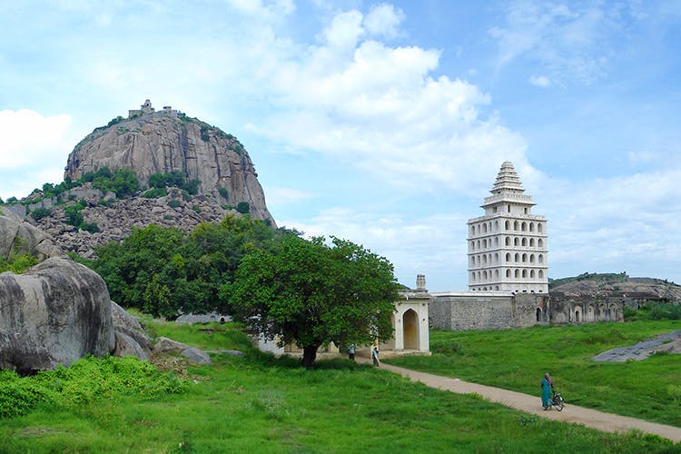
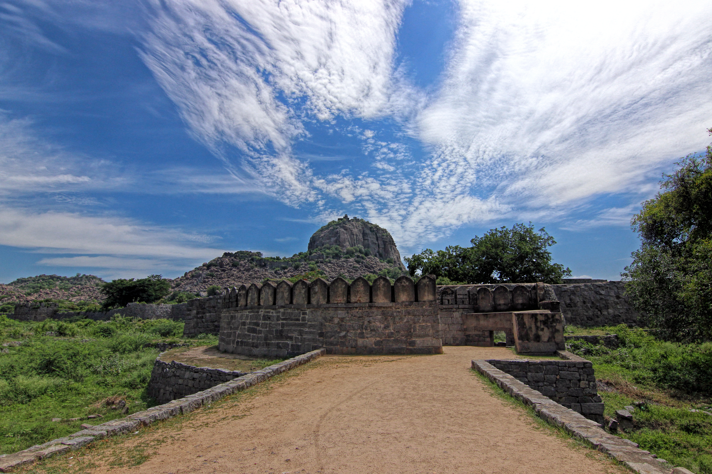
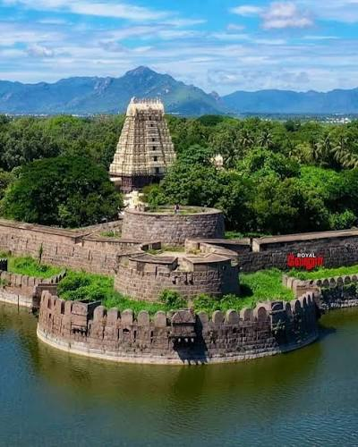
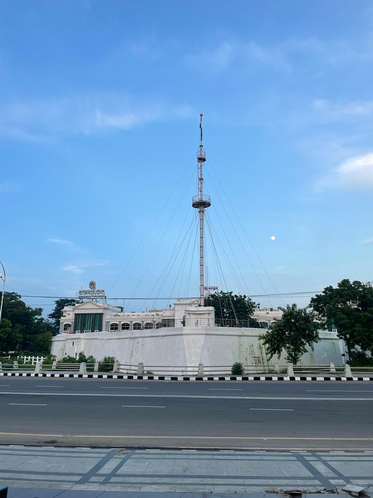
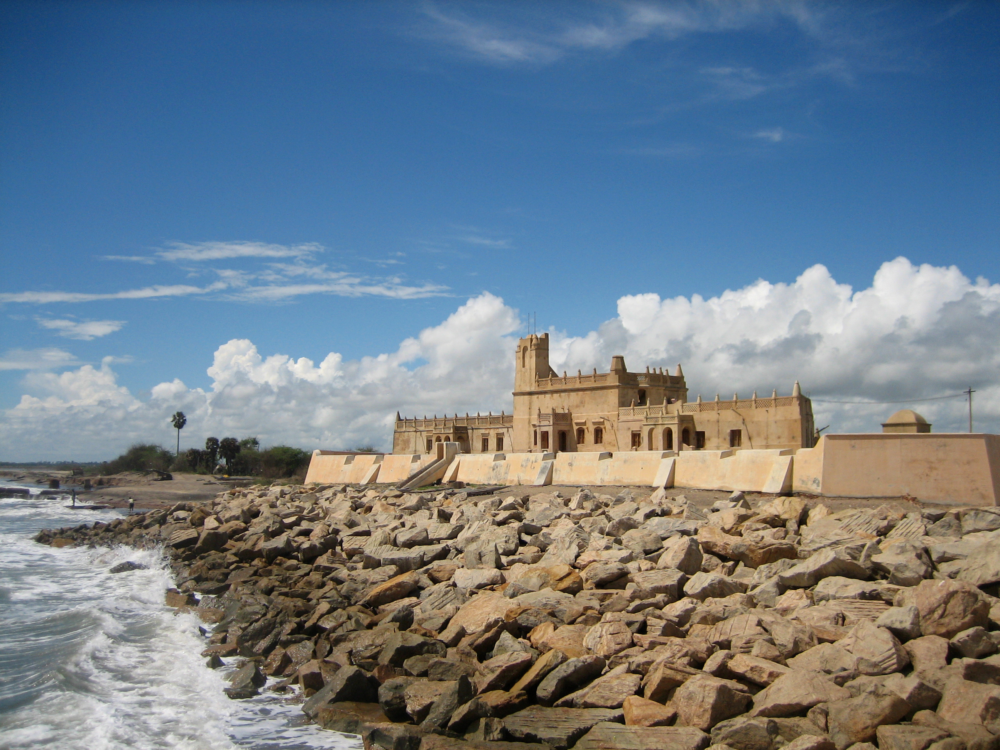
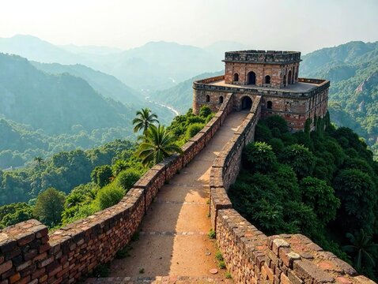
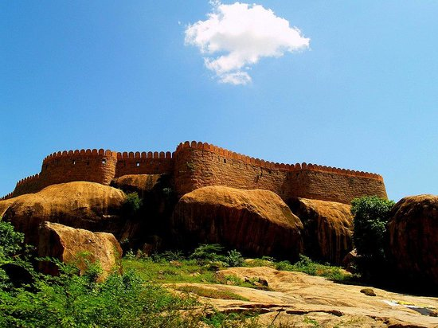

தமிழ்நாடு பழமையான அரச மரபுகளையும், போர் மற்றும் பாதுகாப்பு முறைகளையும் எடுத்துக்காட்டும் பல வரலாற்றுச் சிறப்புமிக்க கோட்டைகளைக் கொண்டுள்ளது. சோழர், பாண்டியர், நாயக்கர், விஜயநகரப் பேரரசு, மராட்டியர் மற்றும் ஐரோப்பிய காலனித்துவ ஆட்சியாளர்களின் காலங்களில் இக்கோட்டைகள் முக்கியத்துவம் பெற்றன.
இக்கோட்டைகள் அக்கால இராணுவத் திட்டமிடல், கட்டிடக்கலை, அரசியல் வரலாறு மற்றும் பாதுகாப்பு முறைகளை அறிந்துகொள்ள உதவுகின்றன.

விழுப்புரம் மாவட்டத்தில் அமைந்துள்ள செஞ்சி கோட்டை, தமிழ்நாட்டின் மிகப் பிரம்மாண்டமான வரலாற்றுக் கோட்டைகளில் ஒன்றாகும். இது முதலில் சோழர்களால் உருவாக்கப்பட்டு, பின்னர் விஜயநகரப் பேரரசால் வலுப்படுத்தப்பட்டது.
மூன்று மலைகளைச் சுற்றி அமைந்துள்ள இக்கோட்டையின் ராஜகிரி, கிருஷ்ணகிரி மற்றும் சந்திரயான்துர்கம் ஆகிய பகுதிகள் குறிப்பிடத்தக்கவை. கல்யாண மஹால், தானியக் களஞ்சியங்கள், மதில்கள் மற்றும் அகழி ஆகியவை இதன் முக்கிய சிறப்புகளாகும்.

வேலூரில் அமைந்துள்ள வேலூர் கோட்டை, 16ஆம் நூற்றாண்டில் விஜயநகர ஆட்சிக் காலத்தில் கட்டப்பட்ட முக்கியமான கோட்டையாகும். பின்னர் பல்வேறு ஆட்சியாளர்களின் கட்டுப்பாட்டில் இருந்த இக்கோட்டை, 1806ஆம் ஆண்டு நடைபெற்ற வேலூர் சிப்பாய் கிளர்ச்சியுடன் தொடர்புடையது.
பெரிய கிரானைட் கற்களால் அமைக்கப்பட்ட மதில்கள், அகழி மற்றும் வலுவான பாதுகாப்பு அமைப்புகள் இதன் சிறப்புகளாகும். ஜலகண்டேஸ்வரர் கோயில், தேவாலயம் மற்றும் மசூதி ஆகியவையும் கோட்டை வளாகத்தில் அமைந்துள்ளன.

சென்னையில் அமைந்துள்ள செயின்ட் ஜார்ஜ் கோட்டை, ஆங்கிலேயர்களால் 1640ஆம் ஆண்டு நிறுவப்பட்ட முக்கியமான காலனித்துவக் கோட்டையாகும். சென்னையின் ஆரம்பகால நகர வளர்ச்சியுடன் இக்கோட்டை நெருங்கிய தொடர்புடையது.
வலுவான மதில்கள் மற்றும் பாதுகாப்பு அமைப்புகளைக் கொண்ட இக்கோட்டை, காலனித்துவ காலத்தில் நிர்வாக மற்றும் இராணுவ மையமாகச் செயல்பட்டது. கோட்டை அருங்காட்சியகம் மற்றும் செயின்ட் மேரிஸ் தேவாலயம் ஆகியவை இங்குள்ள முக்கிய வரலாற்றுச் சின்னங்களாகும்.

மயிலாடுதுறை மாவட்டத்தின் தரங்கம்பாடியில் அமைந்துள்ள டான்ஸ்போர்க் கோட்டை, டேனிஷ் ஆட்சிக் காலத்தின் முக்கியமான வரலாற்றுச் சின்னமாகும். இது 1620ஆம் ஆண்டு கட்டப்பட்டதாகும்.
கடலை நோக்கிய அமைப்பு, உயரமான மதில்கள் மற்றும் தனித்துவமான ஐரோப்பிய கட்டிடக்கலை ஆகியவை இதன் சிறப்புகளாகும். கோட்டைக்குள் அமைந்துள்ள அருங்காட்சியகத்தில் டேனிஷ் ஆட்சிக் காலத்தைச் சேர்ந்த பல வரலாற்றுப் பொருட்கள் காணப்படுகின்றன.

திண்டுக்கல் நகரின் நடுப்பகுதியில் உள்ள உயரமான பாறைமலையின் மீது அமைந்துள்ள திண்டுக்கல் கோட்டை, நாயக்கர் காலத்தைச் சேர்ந்த முக்கியமான கோட்டையாகும். பின்னர் ஹைதர் அலி மற்றும் திப்பு சுல்தான் காலத்தில் இது மேலும் வலுப்படுத்தப்பட்டது.
தடித்த மதில்கள், பாதுகாப்பு அரண் பகுதிகள் மற்றும் பீரங்கி அமைப்புகள் இதன் முக்கிய அம்சங்களாகும். கோட்டையின் உயரமான பகுதிகளில் இருந்து திண்டுக்கல் நகரையும் சுற்றியுள்ள பகுதிகளையும் காண முடியும்.

புதுக்கோட்டை மாவட்டத்தில் அமைந்துள்ள திருமயம் கோட்டை, 1687ஆம் ஆண்டு ராமநாதபுரம் சேதுபதி மன்னரால் கட்டப்பட்டதாகக் கருதப்படுகிறது. இது அக்காலத்தில் முக்கியமான இராணுவத் தளமாக விளங்கியது.
இயற்கையான பாறை அமைப்பின் மீது கட்டப்பட்டுள்ள இக்கோட்டையில் மதில்கள், பாதுகாப்புக் கோபுரங்கள் மற்றும் பாறைக்குடைவரைக் கோயில்கள் காணப்படுகின்றன. சிவன் மற்றும் விஷ்ணுவுக்கான குடைவரைக் கோயில்கள் இதன் குறிப்பிடத்தக்க அம்சங்களாகும்.
தமிழ்நாட்டின் கோட்டைகள் அவை அமைந்துள்ள நிலப்பரப்பு மற்றும் கட்டப்பட்ட காலத்தைப் பொறுத்து வெவ்வேறு கட்டிடக்கலை அம்சங்களைக் கொண்டுள்ளன.
எதிரிகளின் தாக்குதலைத் தடுப்பதற்காக அமைக்கப்பட்டன.
கோட்டையைச் சுற்றி கூடுதல் பாதுகாப்பை வழங்கின.
எதிரிகளின் நடமாட்டத்தைத் தொலைவிலிருந்தே கண்காணிக்கப் பயன்படுத்தப்பட்டன.
பின்னர் காலங்களில் நவீன ஆயுதங்களைப் பயன்படுத்துவதற்காக அமைக்கப்பட்டன.
செஞ்சி, திண்டுக்கல் போன்ற கோட்டைகளில் இயற்கை அமைப்பே பாதுகாப்பின் ஒரு பகுதியாக பயன்படுத்தப்பட்டது.
சில கோட்டை வளாகங்களில் வழிபாடு மற்றும் நிர்வாகத்திற்கான கட்டிடங்களும் அமைந்திருந்தன.
“தமிழ்நாட்டின் கோட்டைகள் வெறும் பாதுகாப்பு அமைப்புகளாக மட்டுமல்லாமல், அரசியல் மற்றும் இராணுவ நடவடிக்கைகளின் முக்கிய மையங்களாகவும் விளங்கின. பல்வேறு அரச மரபுகளின் ஆட்சி மாற்றங்கள், போர்கள் மற்றும் காலனித்துவ வரலாற்றுடன் இவை தொடர்புடையவை.”
இக்கோட்டைகள் மூலம் பழைய இராணுவத் தொழில்நுட்பம், கட்டிடக்கலை, அரசாட்சி முறைகள் மற்றும் அக்கால சமூக வாழ்க்கை குறித்து பல தகவல்களை அறிந்துகொள்ள முடிகிறது.
| கோட்டை | அமைந்துள்ள இடம் | சிறப்பு |
|---|---|---|
| செஞ்சி கோட்டை | விழுப்புரம் | மூன்று மலைகளை உள்ளடக்கிய பிரம்மாண்ட கோட்டை |
| வேலூர் கோட்டை | வேலூர் | கிரானைட் மதில்கள் மற்றும் அகழி |
| செயின்ட் ஜார்ஜ் கோட்டை | சென்னை | காலனித்துவ கால முக்கிய கோட்டை |
| டான்ஸ்போர்க் கோட்டை | தரங்கம்பாடி | டேனிஷ் கால கட்டிடக்கலை |
| திண்டுக்கல் கோட்டை | திண்டுக்கல் | பாறைமலையின் மீது அமைந்த கோட்டை |
| திருமயம் கோட்டை | புதுக்கோட்டை | பாறைக்குடைவரைக் கோயில்கள் மற்றும் மதில்கள் |
| சத்தியமங்கலம் கோட்டை | ஈரோடு | வரலாற்று இராணுவ முக்கியத்துவம் |
| சங்ககிரி கோட்டை | சேலம் | மலைக்கோட்டை மற்றும் பல அடுக்கு மதில்கள் |
| தர்மபுரி கோட்டை | தர்மபுரி | பழமையான கோட்டை அமைப்பு |
| மணோரா கோட்டை | தஞ்சாவூர் | கடற்கரைக்கு அருகிலுள்ள தனித்துவமான கோட்டை |